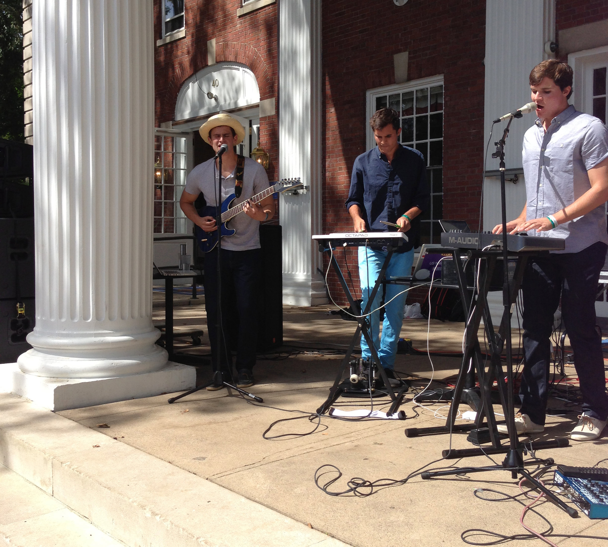

Photo Gallery
Here we will showcase memorable moments in our club's history. We take pride in our involvement on the field, around campus, and after graduation. Check back here to see what we've been up to!
Joe Barrett '14 receives the Pyne Prize, Princeton's highest academic honor. He is pictured with University President, Chris Eisgruber, and co-winner, Izzy Kasdin '14.

